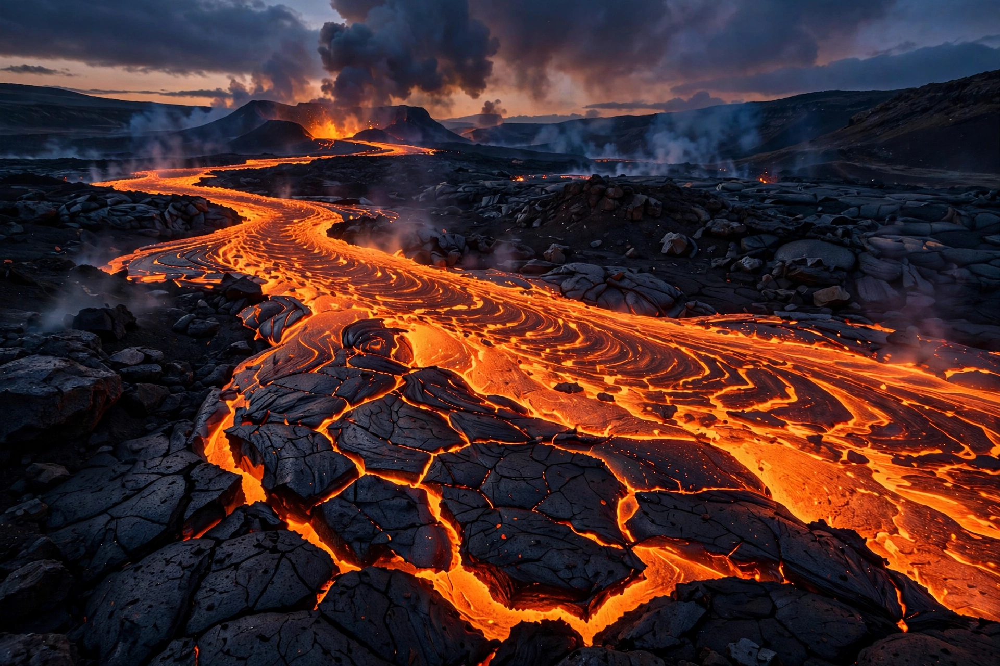

Lava is molten or partially molten rock (magma) that has been expelled from the interior of a terrestrial planet or a moon onto its surface. Lava may be erupted at a volcano or through a fracture in the crust, on land or underwater, usually at temperatures from 800 to 1,200 °C (1,470 to 2,190 °F).

| Lava | |
|---|---|
| Temperature | 800–1,200 °C |
| Types | Pāhoehoe, ʻAʻā, blocky, pillow |
Most lava is rich in silicate minerals. Basaltic lava is low in silica and flows easily; rhyolitic lava is high in silica and viscous. Viscosity and gas content control eruption style and flow morphology.
Common forms include smooth ropy pāhoehoe, rough clinkery ʻaʻā, block lava, and pillow lava formed underwater. See Volcano, Magma and Basalt.
Lava flows rarely move fast enough to outrun people but destroy everything in their path and can ignite fires and cause explosions when contacting water or vegetation.